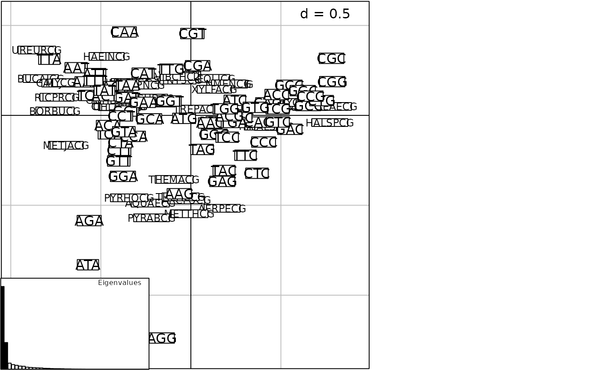

Genomes of 43 Bacteria
bacteria.Rdbacteria is a list containing 43 species and genomic informations : codons, amino acid and bases.
Usage
data(bacteria)Format
This list contains the following objects:
- code
is a factor with the amino acid names for each codon.
- espcodon
is a data frame 43 species 64 codons.
- espaa
is a data frame 43 species 21 amino acid.
- espbase
is a data frame 43 species 4 bases.
Source
Data prepared by J. Lobry Jean.Lobry@univ-lyon1.fr starting from https://www.jcvi.org/.
Examples
data(bacteria)
names(bacteria$espcodon)
#> [1] "GCT" "GCC" "GCA" "GCG" "CGT" "CGC" "CGA" "CGG" "AGA" "AGG" "AAT" "AAC"
#> [13] "GAT" "GAC" "TGT" "TGC" "CAA" "CAG" "GAA" "GAG" "GGT" "GGC" "GGA" "GGG"
#> [25] "CAT" "CAC" "ATT" "ATC" "ATA" "TTA" "TTG" "CTT" "CTC" "CTA" "CTG" "AAA"
#> [37] "AAG" "ATG" "TTT" "TTC" "CCT" "CCC" "CCA" "CCG" "TCT" "TCC" "TCA" "TCG"
#> [49] "AGT" "AGC" "TAA" "TAG" "TGA" "ACT" "ACC" "ACA" "ACG" "TGG" "TAT" "TAC"
#> [61] "GTT" "GTC" "GTA" "GTG"
names(bacteria$espaa)
#> [1] "Ala" "Arg" "Asn" "Asp" "Cys" "Gln" "Glu" "Gly" "His" "Ile" "Leu" "Lys"
#> [13] "Met" "Phe" "Pro" "Ser" "Stp" "Thr" "Trp" "Tyr" "Val"
names(bacteria$espbase)
#> [1] "A" "C" "G" "T"
sum(bacteria$espcodon) # 22,619,749 codons
#> [1] 22619749
if(adegraphicsLoaded()) {
g <- scatter(dudi.coa(bacteria$espcodon, scann = FALSE),
posi = "bottomleft")
} else {
scatter(dudi.coa(bacteria$espcodon, scann = FALSE),
posi = "bottomleft")
}
